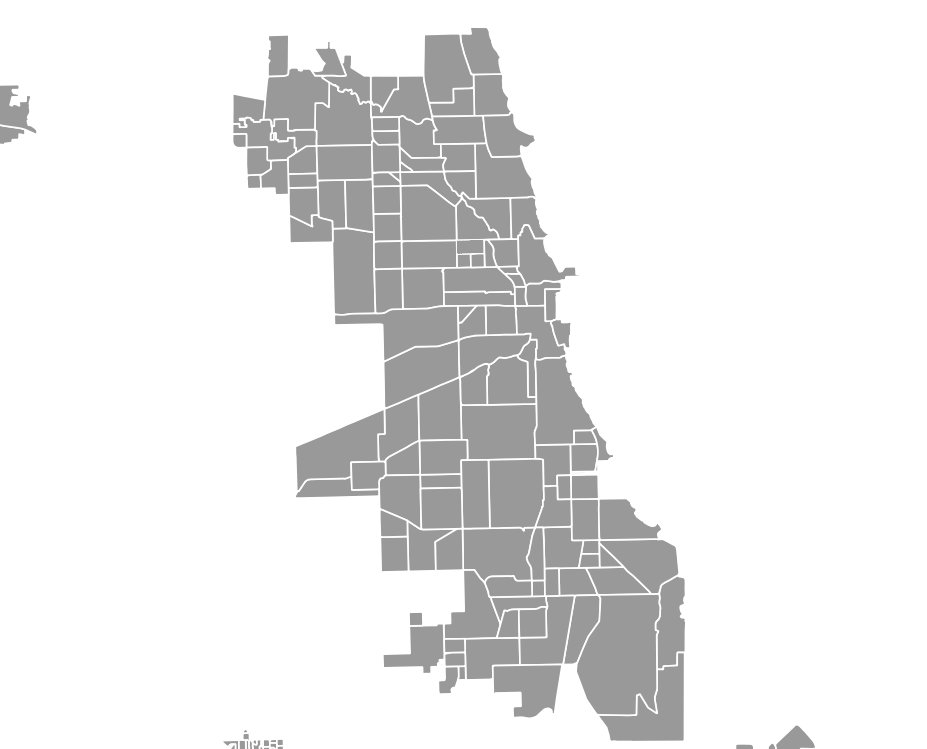

<!DOCTYPE html>
<meta charset = "utf-8">
<html>
  <style>
  </style>
  <head>
    <title>Justice Project Project</title>
    <link type="text/css" rel="stylesheet" href="static/css/style.css">
    <!--script src="static/js/js.js"></script-->
    <script src="https://d3js.org/d3.v4.min.js"> charset="utf-8"</script>
    <script src="https://d3js.org/d3-array.v1.min.js"></script>
    <script src="https://d3js.org/d3-geo.v1.min.js"></script>
    <script src="https://d3js.org/d3-queue.v3.min.js"></script>
    <script src="https://d3js.org/topojson.v1.min.js"></script>
  </head>
  <body>

<!--
something something other fill options? in style
    <svg width="50" height="50" xmlns="http://www.w3.org/2000/svg">
    </svg>
     
     <div id="test" class="overlay">
     </div>
-->

<!--
    <div class="chart">
    </div>
  -->
  <script>
  var width = 720,
      height = 500;

var projection = d3.geoAlbers()
 .scale(70000)
 .rotate( [87.6057,0] )
 .center( [0, 41.826] )
 .translate([width / 2, height / 2]);

var path = d3.geoPath()
 .projection(projection);

var svg = d3.select("body").append("svg")
 .attr("width", width)
 .attr("height", height);

var color = d3.scaleThreshold()
    .domain([0.02, 0.04, 0.06, 0.08, 0.10])
    .range(["#f2f0f7", "#dadaeb", "#bcbddc", "#9e9ac8", "#756bb1", "#54278f"]);
d3.queue()
     .defer(d3.json, "https://raw.githubusercontent.com/uchicagotechteam/chicago-justice-project-project/master/data/chicagotopojson.json") // Load Chicago file
     .defer(d3.json, "https://raw.githubusercontent.com/uchicagotechteam/chicago-justice-project-project/master/data/chicago_rodents.json") // load data file
     .await(ready); // Run 'ready' when JSONs are loaded
// do d3.tsv, "https://........tsv"

// Ready Function, runs when data is loaded
function ready(error, chicagotopojson, chicagocrime) { // calls data file
  if (error) throw error;

  var crimeById = {};
  chicagocrime.forEach(function(d){
    crimeById[d.id] = +d.crime;
  });
  console.log(crimeById);

  svg.append("g")
      .attr("class", "ChicagoMap")
    .selectAll("path")
      .data(topojson.feature(chicagotopojson, chicagotopojson.objects.ChicagoMap).features) // Bind TopoJSON data elements
    .enter().append("path")
      .attr("d", path)
      .style("fill", function(d){
        return color(crimeById[d.id]);
      })
      .style("stroke", "black");
}
  </script>
  </body>


</html>
